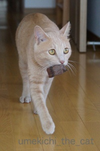
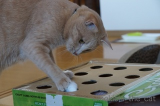
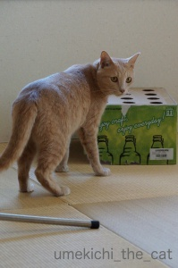
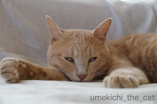

なんかあったかいな・・・ [梅吉]


取ってこい？ができる猫 [梅吉]
椅子足ソックスを交換したら梅吉さんが食いついてきたので進呈。
ほら〜、とおっ。
おおおおお〜っ！高速ドリブラー！！
煮え切らないハリル・ジャパンに追加招集！？(ΦωΦ)
そして・・・

取ってこいが、時々気の向いた時、できることもある・・・。
知人からの情報ですが
猫の肉球の香りのハンドクリーム！肉球の香り！！
掃除監督 [梅吉]


物がお落ちて気になるのは・・・ [梅吉]
梅吉さん、昨日はおイタしたんですよね〜。
がしゃーんという音に玄関へ行ってみると、宅配受取用の印鑑を載せていたオーナメント負傷・・・
あ〜〜〜〜〜〜〜
これフンベルト・フォン・ジッキンゲン男爵、
又の名をバロン（耳をすませば）みたいで気に入ってたのに。
物は違いますが元の形はこんなの。
こちらは不思議の国のアリスの白うさぎ（黒いけど）みたいでこれもお気に入り。
バロンは手がぽっきり。
この騒動の直後ワタクシがとった行動は
まず、梅吉の怪我の有無を確認する（瀬戸物ではなくて鋳物。結構重い）、
次にカメラを取りに走るでした・・・・^^;
梅吉が家に来てから物が壊れてもあまり気にならなくなりました。
家のカーテンや壁紙などなど破壊されたものは数知れずですが梅吉が元気で無事ならまず、良し。
そんなところ入っちゃダメー！と言う前に
トレー越しの肉球がかわいかったものですから・・・・
猫飼い、報われる [梅吉]
梅吉さん？あの箱なんてじーっと見ちゃって。
それにこの前とはずい雰囲気が違いますよ。やる気に満ちているというか・・・

自主トレの成果か、単なる気まぐれか。
梅吉さんが指もぐらたたきの良さを認識してくれたようです。
変わったことは、おっとゆび（笑）から
こちら。お酒のビンを包んでいた不織布。
使い込んでいるのでぼそぼそです。
こちらを穴からひょこひょこだしたら食いつく食いつく。
その様子を動画でど〜ぞ〜♪
ふふふ、You Tuberになっちゃった。

誘導して遊んでもらおうと誘ってきます。
あ〜〜〜遊んでくれてよかった。報われました（おっと）。
指もぐらたたき [梅吉]


嵐の前の静けさ [梅吉]


まだや！ってむっちゃおこられたし
（今２時です！！

って梅吉さん白眼になってますよ！
台風が通過する地域、大事にならないと良いですね。


カフェオレ色の梅吉

梅吉 2023年8月10日 永眠


梅吉と出会った譲渡会

犬猫の理由なき殺処分ゼロ
妄想広告
UMEKICHI 光

爆発的に早い！
時々攻撃的！
Thanks to Mr.Boss365
爆発的に早い！
時々攻撃的！
Thanks to Mr.Boss365